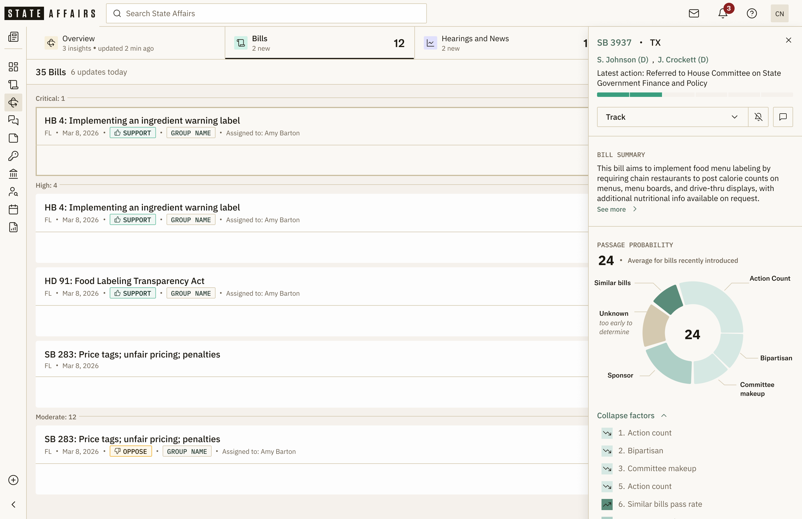
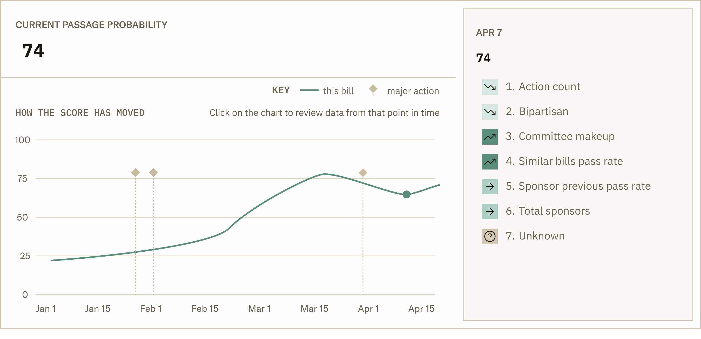
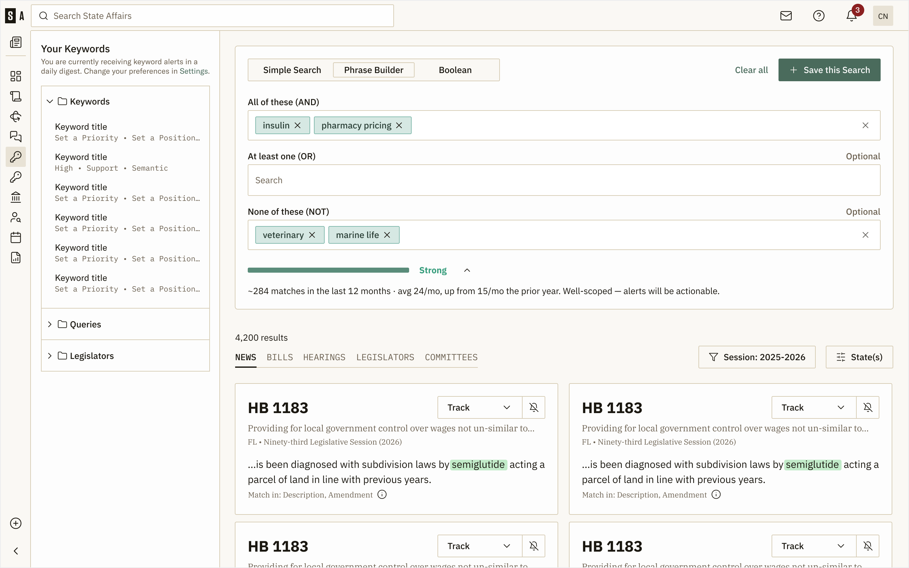
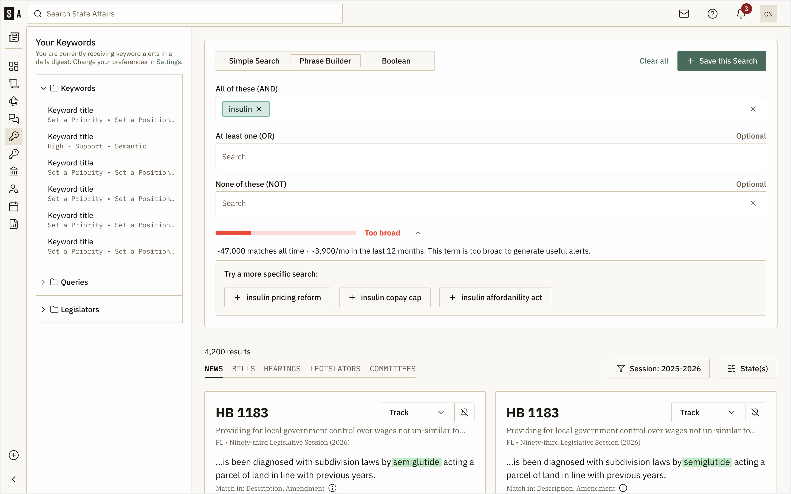
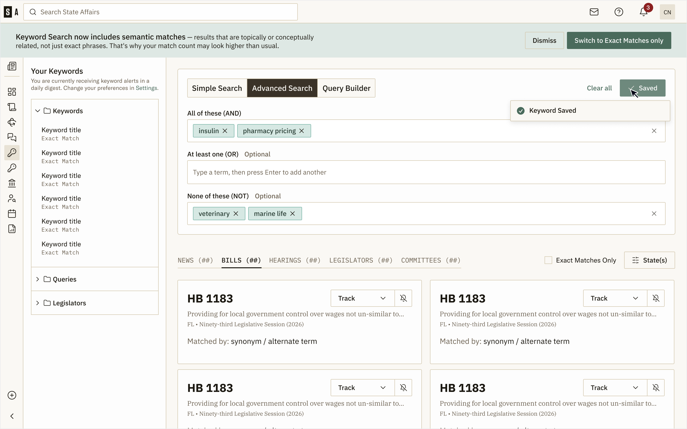
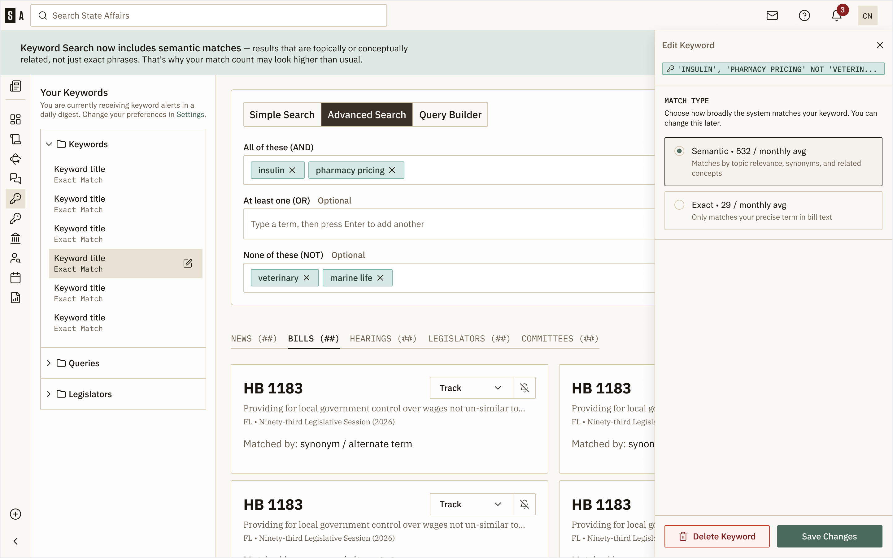
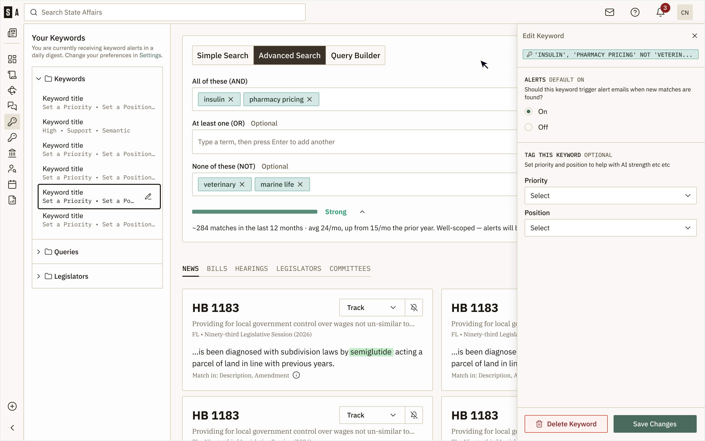

Two years of work at State Affairs — a B2B legislative tracking platform used by enterprise teams to monitor policy across all fifty US states.
Senior product designer at State Affairs, the legislative intelligence platform used by lobbyists, advocacy teams, and government affairs professionals to track policy across all 50 state legislatures. Drove the redesign of six core surfaces — including 360-degree bill views, the directories system, search/keywords, and the live voting scorecard — as the platform scaled from a regional tool to a national one. Worked across product, engineering, and customer success to ship features that turned messy public-record data into something teams could actually act on.
Designing trust into a new probabilistic feature.
A model produces the number. The design produces the trust.
Legislative teams track hundreds of bills across dozens of states. Without a signal for which ones are actually moving, prioritization is guesswork — teams either spread attention evenly or rely on instinct about which bills matter.
Passage Probability changes that. It's a score between 0 and 100 that updates every time a bill moves, trained on 15 years of outcomes across every state. It evaluates signals no analyst can track at scale — sponsor track records, political environment, bill velocity, historical base rates — so users can triage by likelihood, not just status.
The score was new, and skepticism was the default. A number they couldn't interrogate was harder to act on than a hunch from a colleague they trusted. The design problem: make the score legible enough that users can pressure-test it, disagree with it, and learn when to trust it.
Two views, working together.
The first is point-in-time. Inside the bill detail panel, the score sits at the top with a donut breaking it into its top factors — sponsor strength, bipartisan cosponsorship, committee makeup, similar bill outcomes. The donut isn't there to be precise. It's there to communicate that the number is constructed — that 74% isn't pulled from the air, it's the weighted result of factors like sponsorship, legislative body, history of bills with similar language, and more. Each factor in the expanded list shows its direction (this one pushing the score up, that one pulling it down), and the "Unknown" tag on factors the model can't see yet — early-session bills with thin history — is its own honesty signal.

The second view is trajectory. A standalone card pairs the current score with a line chart showing how it's moved over time. Major legislative actions are marked on the timeline. Users can click any point to time-travel: the side panel updates to show what the score was at that action, what drove it, and what changed. A bill climbing from 30% to 70% over two weeks reads completely differently than a bill sitting at 55% for a month — and now the surface makes that visible.

The factor list is doing real work in both views. Factors are numbered rather than bulleted because users want to compare them across actions — which factor moved, by how much — and numbered items give that conversation anchors. Up-arrows, down-arrows, and right-arrows show direction; the green-on-green for positive factors and tan-on-cream for "Unknown" tie back to the donut's color logic.
The 0–100 score never goes away. It's the headline number. But around it, the design builds enough context that a skeptical user can pressure-test the model's read against their own knowledge — and a user managing thousands of bills across 50 states can triage by trajectory rather than treating every score as a verdict.
Three coordinated design moves to make alerts worth listening to.
Helping users write well-scoped queries, making the matching system legible, and capturing what each keyword actually means to the user.
Keyword alerts only work if users trust them. Three ways that trust was breaking down at once.
Enterprise customers were saving overly broad keywords — just insulin, or education — and drowning their dashboards in matches that didn't matter. Once the noise started, the whole product felt broken even though the matching was working as designed.
Semantic matching had just been turned on platform-wide, which meant a keyword like insulin was now silently matching results about semiglutide. More useful in theory, harder to trust in practice — users didn't know why a result had shown up, or how to make it stop.
And the system had no way to know which of a user's keywords actually mattered to them. A keyword they cared deeply about and a keyword they'd saved on a whim competed for the same space across dashboards, 360 views, and recommended bills.
A live Strength Indicator inside the search form — modeled on a password strength meter — scoring every query as users build it. Four states — Strong, Good, Fair, Too broad — each tied to a projected match volume. "Strong" reads as "~284 matches in the last 12 months · avg 24/mo, up from 15/mo the prior year. Well-scoped — alerts will be actionable." "Too broad" reads as "~47,000 matches all time · ~3,900/mo in the last 12 months. This term is too broad to generate useful alerts."
When the indicator drops to Fair or Too broad, the form surfaces concrete narrower alternatives as one-click chips: insulin pricing reform, insulin copay cap, insulin affordability act. Suggestions come from the corpus, not a static list.
The decision worth calling out: I chose to coach users inside the form rather than block them with a speedbump modal at save. A speedbump tells someone they've done something wrong after the fact. The Strength Indicator tells them what's working as they go. The friction is informative, not punitive.


Three parts working together.
A Match Type field on every keyword, with the tradeoff stated in user-relevant terms: Semantic · 532 / monthly avg, matches by topic relevance, synonyms, and related concepts vs. Exact · 29 / monthly avg, only matches your precise term in bill text. Users pick their tradeoff per keyword.
A top-of-page banner the first time a user lands on the keywords page after the semantic rollout, explaining the change in two sentences and offering "Switch to Exact Matches only" as a one-click escape hatch. The banner can be dismissed once the user has made their call.
Per-result transparency on every card: "Matched by: synonym / alternate term," with the matched phrase highlighted in the result snippet. When a result is showing up because of a semantic match rather than the literal keyword, the user can see why.
These three pieces are doing the same job at three different scales — the field is the user's stance on a single keyword, the banner is the user's stance on the system, the card-level transparency is the user's read on a single result.


Two new first-class fields on every saved keyword: Priority and Position. Priority captures how much the user cares. Position captures their stance — Support, Oppose, Watch.
This metadata isn't decorative. It feeds into how 360 reports rank bills, which keywords get surfaced in recommended bills, and which alerts get foregrounded in the daily digest. The aside in the keyword drawer states this plainly: "Set priority and position to help with AI strength."
A smaller change than the other two, but structurally different. The Strength Indicator and the match-type controls are about the query. Priority and Position are about the user's stance toward the query. Together they give the system enough signal to filter what reaches the user.
